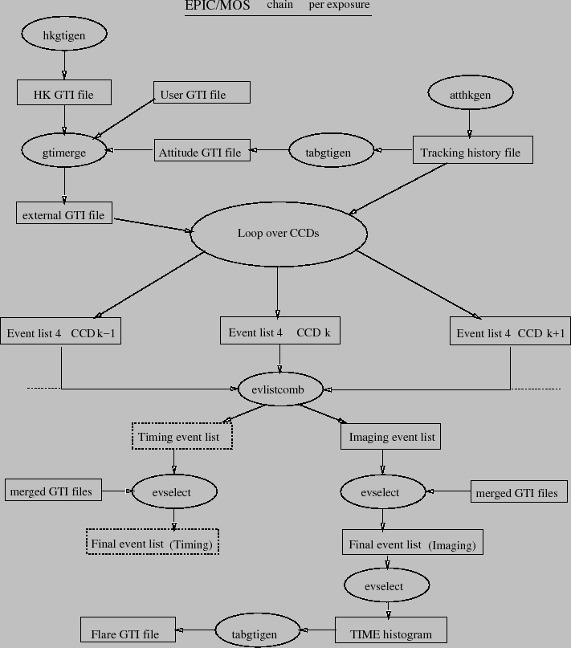
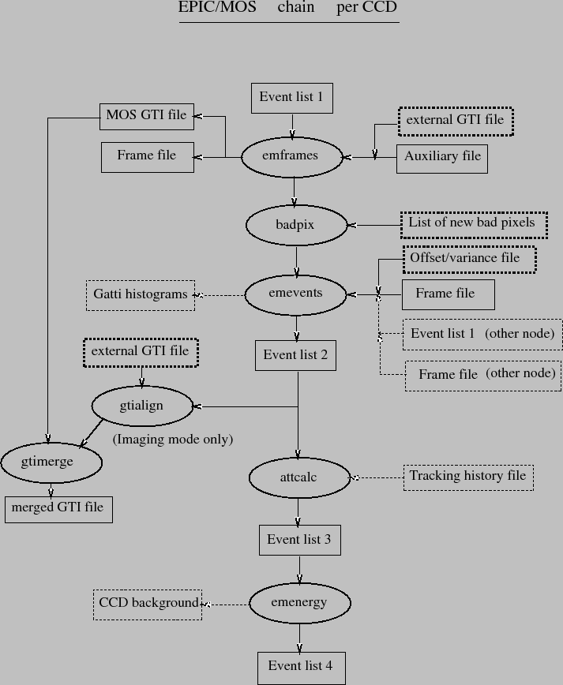

|  |
The main subroutine (processOdf, Fig 1) loops over all exposures and instruments (MOS1/MOS2) present in the input directory (looking for event list files).
If withatthkgen is true or if the tracking history file does not exist already, atthkgen is run first. tabgtigen is run on the output to generate the attitude GTI. The tolerance on attitude variations may be modified via atttol. hkgtigen is run if the HK GTI does not exist already. Those GTI files are not applied by default, they are generated for information. They can be applied by setting filteratt=Y and/or filterhk=Y. They are then merged with the user GTI (if ingtiset is set) into the external GTI used by emframes.
processOdf creates one (or two, if a CCD is operated in TIMING mode) event list for every selected exposure, from all relevant ODF material and (if they exist) the good time intervals generated by tabgtigen and the list of bad pixels (from the CCF or produced internally).
|  |
In a first step it loops over all CCD/nodes, calling in sequence, as shown in Fig 2:
By default position, energy and time of each photon are randomised within their respective bins (one CCD pixel for position, one ADU for energy, one frame for time).
Then (Fig 1) all the event list files created (one per CCD/node) are merged by evlistcomb, creating one events list per mode (IMAGING, TIMING). Finally evselect is called on the resulting events list(s), with (CCDNR==$node$ccd) && GTI(merged GTI file,TIME) for all CCD/nodes. emtaglenoise loops over all CCDs (except the central one) to check occurrence of low-energy electronic noise and write the LENOISnn keyword, set to 1 if a CCD is affected. The list of calibration files used to analyse the data is added to the output files as a CALINDEX extension.